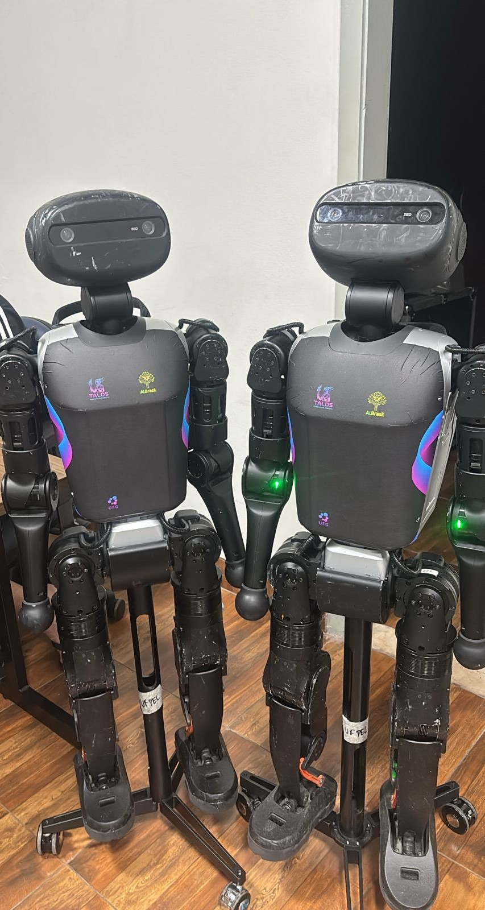

Our MVPs: Zizou and Ronie

We're Talos Humanoid Robots, a research and development team based at the Federal University of Goiás, focused on reinforcement learning, multimodal perception and safe human-robot interaction.
At our core are our players: the Booster Robotics T1 humanoid robots, affectionately named Ronie and Zizou. Through them, we push boundaries in the RoboCup Humanoid League.
We are powered by collaboration, receiving crucial support from CEIA and AKCIT at UFG. In the past year, our group has presented at events like CBR 2025 and AI Brasil Experience 2025.
This is our commitment: a new way of doing robotics.